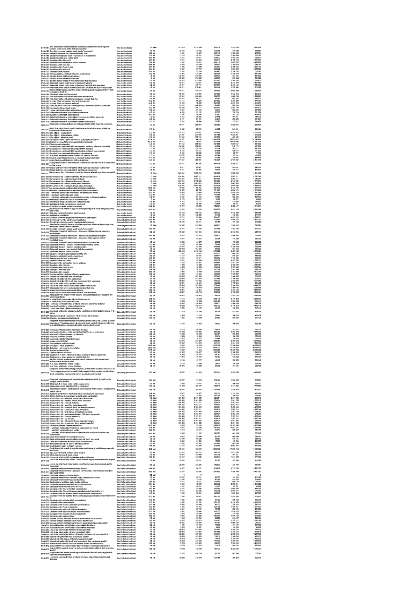

| Tétel | Megjegyzés | Menny. | Egys. | Anyag e.ár (net HUF) | Díj e.ár (net HUF) | Anyag összesen (net HUF) | Díj összesen (net HUF) | Anyag+Díj összesen (net HUF) |
|---|---|---|---|---|---|---|---|---|
| 51-00-181 Jobb oldali kőkeret és ablakpárkány közötti faltest (H2) - Egyedi | Hold utcai homlokzat | 1,0 | db | 413 418 | 413 418 | 413 418 | 413 418 | 826 836 |
| 51-00-182 Középrizalit bal oldali fülkeszobrok alatti kőkonzol - Egyedi | Hold utcai homlokzat | 2,0 | db | 30 787 | 130 785 | 61 574 | 261 570 | 323 144 |
| 51-00-183 Könyöklő kőfaragvány (H2) - Egyedi | Hold utcai homlokzat | 1,0 | db | 128 832 | 673 005 | 128 832 | 673 005 | 801 837 |
| 51-00-184 Középrizalit jobb oldali fülkeszobrok alatti kőkonzol - Egyedi | Hold utcai homlokzat | 2,0 | db | 30 787 | 130 785 | 61 574 | 261 570 | 323 144 |
| 51-00-185 Bal oldali fülkeszobor alatti kőkonzol - Egyedi | Hold utcai homlokzat | 2,0 | db | 30 787 | 130 785 | 61 574 | 261 570 | 323 144 |
| 51-01-214 Szellőző kivezetés rácsok közötti kőburkolat (Hold u. 1-2.) | Hold utcai homlokzat | 17,6 | fm | 2 500 | 30 767 | 44 000 | 541 499 | 585 499 |
| 51-01-215 Öntött műkő - Vakolás utólagos kőburkolat | Hold utcai homlokzat | 5,0 | db | 115 373 | 915 297 | 576 865 | 4 576 483 | 5 153 348 |
| 51-01-251 Homlokzati kőfelületek tisztítása vegyszeres úton | Szabadság téri homlokzat | 225,4 | m2 | 15 527 | 84 419 | 3 499 511 | 19 028 343 | 22 527 854 |
| 51-01-252 Homlokzati kőfelületek tisztítása gőzzel | Szabadság téri homlokzat | 38,1 | fm | 14 422 | 110 931 | 549 478 | 4 226 471 | 4 775 949 |
| 51-01-307 Középrizalit fülkeszobor alatti kőkonzol - Egyedi | Szabadság téri homlokzat | 2,0 | db | 30 787 | 130 785 | 61 574 | 261 570 | 323 144 |
| 51-01-352 Homlokzati kőfelületek tisztítása vegyszeres úton | Kiss Ernő utcai homlokzat | 19,7 | fm | 4 808 | 40 380 | 94 720 | 795 492 | 890 212 |
| 51-01-353 Homlokzati kőfelületek tisztítása gőzzel | Kiss Ernő utcai homlokzat | 19,7 | fm | 4 808 | 40 380 | 94 720 | 795 492 | 890 212 |
